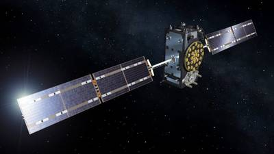
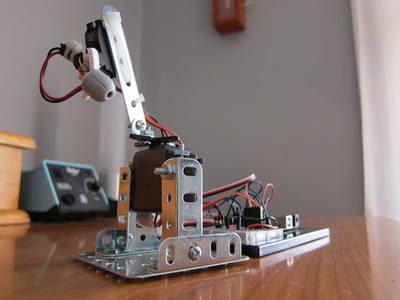

2017-01-19 - Nº 90

Editorial
Esta é a Newsletter Nº 90 que se apresenta com o mesmo formato que as anteriores. Se gostar da Newsletter partilhe-a!
Todas as Newsletters encontram-se indexadas no link.
Esta Newsletter tem os seguintes tópicos:
Faz hoje anos James Watt. Este inventor escocês nascido em 1736, foi responsável pela invenção do motor a vapor, fundamental para a Revolução industrial. Tendo desenvolvido o conceito de cavalo de força (horsepower) foi atribuido à unidade de força (Power) o seu nome. Esta semana ficámos a saber que foi lançado o módulo de computação Raspberrry Pi 3 - este tem um formato identico ao anterior no entanto já usa o mesmo microcontrolador do Raspberry Pi 3 tradicional, sendo por isso 10 vezes mais rápido que o anterior módulo. Os satélites Galileo estão a sofrer falhas multiplas dos seus relógios internos. Dos 18 satélites em órbita, 9 têm os relógios avariados. Esta situação, cuja origem do problema ainda não é conhecida irá certamente atrasar ainda mais o funcionamento em pleno desta rede alternativa ao GPS. O CEO da Airbus afirmou numa conferencia esta semana que o seu grupo irá fazer os primeiros testes de voo com um veiculo - vulgo carro voador - ainda este ano. O veiculo é bastante similar a um helicoptero.
Na Newsletter desta semana apresentamos diversos projetos de maker assim como alguns modelos 3D que poderão ser úteis. Falamos ainda sobre as revistas PROGRAMAR - edição 54 e a newelectronics de 10 de Janeiro 2017.
 João Alves ([email protected])
João Alves ([email protected])
O conteúdo da Newsletter encontra-se sob a licença  Creative Commons Attribution-NonCommercial-ShareAlike 4.0 International License.
Creative Commons Attribution-NonCommercial-ShareAlike 4.0 International License.
Novidades da Semana ^
Compute module 3 out now!
"The Raspberry Pi Foundation has launched a new version of its Compute Module – a Raspberry Pi in a more flexible form factor, intended to provide an easy and cost-effective route to producing customised products. While the original Module, launched in 2014, contained the guts of a first-generation Pi, the new Compute Module 3 (CM3) is based on the Pi 3, so offers a major boost in performance. “It’s got the same BCM2837 processor which can run at up to 1.2HGz and 1GB of RAM,” says Foundation COO James Adams. This means it provides twice the RAM and roughly ten times the CPU performance of the original Compute Module (CM1). Just like the Pi 3, the CM3 is able to run Windows 10 IoT Core, opening up many possibilities: “An IoT project can be ported from a Pi 3 onto a custom CM3-based system very easily.”" [...]

Galileo satellites experiencing multiple clock failures
"Across the 18 satellites now in orbit, nine clocks have stopped operating. Three are traditional rubidium devices; six are the more precise hydrogen maser instruments that were designed to give Galileo superior performance to the American GPS network. Galileo was declared up and running in December. However, it is still short of the number of satellites considered to represent a fully functioning constellation, and a decision must now be made about whether to suspend the launch of further spacecraft while the issue is investigated. Prof Jan Woerner, the director general of the European Space Agency (Esa), told a meeting with reporters: "Everybody is raising this question: should we postpone the next launch until we find the root cause, or should we launch?" [...]
Airbus CEO sees 'flying car' prototype ready by end of year
"Airbus Group plans to test a prototype for a self-piloted flying car as a way of avoiding gridlock on city roads by the end of the year, the aerospace group's chief executive said on Monday. Airbus last year formed a division called Urban Air Mobility that is exploring concepts such as a vehicle to transport individuals or a helicopter-style vehicle that can carry multiple riders. The aim would be for people to book the vehicle using an app, similar to car-sharing schemes." [...]
Outras Notícias
- How the World’s Oldest Computer Worked: Reconstructing the 2,200-Year-Old Antikythera Mechanism
- NASA Is Making New Robots That Can Control Themselves
- Driverless electric shuttle being tested in downtown Vegas
Ciência e Tecnologia ^
Technique enables adaptable 3-D printing
"Three-dimensional printing technology makes it possible to rapidly manufacture objects by depositing layer upon layer of polymers in a precisely determined pattern. Once these objects are completed, the polymers that form the material are “dead” — that is, they cannot be extended to form new polymer chains. MIT chemists have now developed a technique that allows them to print objects and then go back and add new polymers that alter the materials’ chemical composition and mechanical properties. The researchers can also fuse two or more printed objects together to form more complex structures." [...]
The power of attraction
"Engineered nanometer- and micrometer-scale structures have a vast array of uses in electronics, sensors and biomedical applications. Because these are difficult to fabricate, KAUST researchers are trying a bottom-up philosophy, which harnesses the natural forces between atoms and molecules such that microstructures form themselves. This approach, a departure from the usual top-down approach, involves the etching away of material to leave the desired sculpted structure behind; however, because this approach can be tricky, expensive and time consuming, KAUST researchers became motivated to find a new approach." [...]
Semiconductor eyed for next-generation ‘power electronics’
"Researchers have demonstrated the high-performance potential of an experimental transistor made of a semiconductor called beta gallium oxide, which could bring new ultra-efficient switches for applications such as the power grid, military ships and aircraft. The semiconductor is promising for next-generation “power electronics,” or devices needed to control the flow of electrical energy in circuits. Such a technology could help to reduce global energy use and greenhouse gas emissions by replacing less efficient and bulky power electronics switches now in use. The transistor, called a gallium oxide on insulator field effect transistor, or GOOI, is especially promising because it possesses an “ultra-wide bandgap,” a trait needed for switches in high-voltage applications. Compared to other semiconductors thought to be promising for the transistors, devices made from beta gallium oxide have a higher “breakdown voltage,” or the voltage at which the device fails, said Peide Ye, Purdue University's Richard J. and Mary Jo Schwartz Professor of Electrical and Computer Engineering." [...]
Making energy-harvesting computers reliable
"A revolutionary and emerging class of energy-harvesting computer systems require neither a battery nor a power outlet to operate, instead operating by harvesting energy from their environment. While radio waves, solar energy, heat, and vibrations have the ability to power devices, harvested energy sources are weak leading to an “intermittent execution,” with periodic power failures and unreliable behavior. Brandon Lucia, an assistant professor of electrical and computer engineering at Carnegie Mellon University, and his Ph.D. student Alexei Colin created the first programming language designed to build reliable software for intermittent, energy-harvesting computers. Colin will present the work at the 2016 SPLASH conference in Amsterdam, Netherlands, on November 3rd." [...]
Graphene’s sleeping superconductivity awakens
"Researchers have found a way to trigger the innate, but previously hidden, ability of graphene to act as a superconductor – meaning that it can be made to carry an electrical current with zero resistance. The finding, reported in Nature Communications, further enhances the potential of graphene, which is already widely seen as a material that could revolutionise industries such as healthcare and electronics. Graphene is a two-dimensional sheet of carbon atoms and combines several remarkable properties; for example, it is very strong, but also light and flexible, and highly conductive. Since its discovery in 2004, scientists have speculated that graphene may also have the capacity to be a superconductor. Until now, superconductivity in graphene has only been achieved by doping it with, or by placing it on, a superconducting material - a process which can compromise some of its other properties. But in the new study, researchers at the University of Cambridge managed to activate the dormant potential for graphene to superconduct in its own right. This was achieved by coupling it with a material called praseodymium cerium copper oxide (PCCO)." [...]
Seeing the quantum future… literally
"Scientists at the University of Sydney have demonstrated the ability to “see” the future of quantum systems, and used that knowledge to preempt their demise, in a major achievement that could help bring the strange and powerful world of quantum technology closer to reality. The applications of quantum-enabled technologies are compelling and already demonstrating significant impacts – especially in the realm of sensing and metrology. And the potential to build exceptionally powerful quantum computers using quantum bits, or qubits, is driving investment from the world’s largest companies. However a significant obstacle to building reliable quantum technologies has been the randomisation of quantum systems by their environments, or decoherence, which effectively destroys the useful quantum character. The physicists have taken a technical quantum leap in addressing this, using techniques from big data to predict how quantum systems will change and then preventing the system’s breakdown from occurring." [...]
Using mathematics to hunt for computer errors
"Security gap in application discovered, update urgently recommended. Alerts like that can confront us every week. Often, a comprehensive update that addresses teething troubles is already offered when a new programme is launched. This creates manifold problems, and public entities as well as businesses are often exposed to attacks by hackers. Software is used in a growing number of sensitive areas where a computer failure might even be life threatening. It has to be noted that not all fields are affected in the same way, many computer systems run as unfailingly as the proverbial Swiss clockwork. While hardware is usually very reliable, it is the software component that may create problems." [...]
Implantable Microrobots
"A team of researchers led by Biomedical Engineering Professor Sam Sia at Columbia Engineering has developed a way to manufacture microscale machines from biomaterials that can safely be implanted in the body. Working with hydrogels, which are biocompatible materials that engineers have been studying for decades, Sia has invented a new technique that stacks the soft material in layers to make devices that have three-dimensional, freely moving parts. The study, published online January 4, 2017, in Science Robotics, demonstrates a fast manufacturing method Sia calls “implantable microelectromechanical systems” (iMEMS). By exploiting the unique mechanical properties of hydrogels, the researchers developed a “locking mechanism” for precise actuation and movement of freely moving parts, which can function as valves, manifolds, rotors, pumps, and drug delivery systems. They were able to tune the biomaterials within a wide range of mechanical and diffusive properties and to control them after implantation without a sustained power supply, such as a toxic battery. They then tested the payload delivery in a bone cancer model and found that the triggering of releases of doxorubicin from the device over 10 days showed high treatment efficacy and low toxicity, at 1/10th of the standard systemic chemotherapy dose." [...]
Inspired by a whirligig toy, Stanford bioengineers develop a 20-cent, hand-powered blood centrifuge
"Here’s how to build a whirligig: Thread a loop of twine through two holes in a button. Grab the loop ends, then rhythmically pull. As the twine coils and uncoils, the button spins at a dizzying speed. Now, using the same mechanical principles, Stanford bioengineers have created an ultra-low-cost, human-powered centrifuge that separates blood into its individual components in only 1.5 minutes. Built from 20 cents of paper, twine and plastic, a “paperfuge” can spin at speeds of 125,000 rpm and exert centrifugal forces of 30,000 Gs. “To the best of my knowledge, it’s the fastest spinning object driven by human power,” said Manu Prakash, an assistant professor of bioengineering at Stanford. A centrifuge is critical for detecting diseases such as malaria, African sleeping sickness, HIV and tuberculosis. This low-cost version will enable precise diagnosis and treatment in the poor, off-the-grid regions where these diseases are most prevalent. The physics and test results of this device are published in the Jan. 10 issue of Nature Biomedical Engineering." [...]
"This thing is one of the coolest things I've come up with. Holds an arduino with breadboard. Has 2 drawers that you can store resistors / caps etc etc. When the breadboard and drawer are gone, arduino with shield can be stored. Lid protects whatever you have already setup on the proto-board. I use a m3 allen wrench to hold it together when traveling around with it. Optional PLA "Spike" (See version 2 video on how to make a PLA spike) There are now two versions" [...]
Walking Gear Robot
"The Walking Gear Bot, through the clever use of planetary gearing, converts simple rotation to a walking motion. It uses a single 6V electric motor equipped with a speed reducer. This motor can be bought on eBay for less than $5. You will also need 4 AA batteries, a couple of jumper cables or wires, and a paperclip. No soldering required. See the video to watch this robot walk." [...]
Documentação ^
A documentação é parte essencial do processo de aprendizagem e a Internet além de artigos interessantes de explorar também tem alguma documentação em formato PDF interessante de ler. Todos os links aqui apresentados são para conteúdo disponibilizado livremente pelo editor do livro.
newelectronics - 10 January 2017
"New Electronics is a fortnightly magazine focusing on technological innovation, news and the latest developments in the electronics sector. Downloadable as a digital page turner or pdf file, or offered as a hard copy, the New Electronics magazine is available in a format to suit you." [...]
Revista PROGRAMAR Nº54
"A Revista PROGRAMAR é um projeto iniciado e desenvolvido por membros da comunidade Portugal-a-Programar.org, com o objetivo de colmatar a falta de uma revista portuguesa sobre programação e de promover a criação de conteúdos relacionados com programação, em português. Face a isto, esta equipa decidiu desenvolver uma revista sobre formato eletrónico (.pdf), que reúne periodicamente, vários artigos escritos por diversos programadores especialmente para cada edição. Nesta 54ª edição temos como tema de capa o artigo Programação Genética, da autoria de Ricardo Cristóvão Miranda. Adicionalmente, nesta edição poderão encontrar mais 18 artigos, que listamos de seguida: API Rest com Spring Boot (parte 1) (José Martins); Programação de aplicações cliente/servidor assentes no protocolo de transporte UDP (Patrício Domingues, Vítor Carreira, Carlos Grilo); PHP 7 (Fábio Basso); Lets Brainfuck in Pascal! (Igor Nunes); JavaFX : Uma Breve Introdução (Nuno Cancelo); Criptografia e Segurança por Hardware com Arduino/Genuíno ou outros sistemas por I2C (António C. Santos); Interagindo com páginas web com C# (Bruno Sonnino); SQL Curtas #1: Intervalos de datas (André Melancia); Análise ao livro Desenvolvimento Ágil de Software – Guia Prático, 1a edição (António Miguel Rosado da Cruz); Análise ao livro HTLM 5 – 4a Edição Atualizada e Aumentada (Rita Peres); WiFi Air Denial (Rita Peres); ’30 30 37 – For Your Eyes Only’ (André Melancia); NSA Secrets – Hacking SQL Server – Dynamic Data (UN)Masking (André Melancia); A primeira comunidade portuguesa de mulheres em tecnologia apresenta-se com novo nome e objetivos mais ambiciosos (Vânia Gonçalves, em colaboração com Joana Fillol); Instalando um Servidor VPN num Raspberry Pi (António C. Santos); Segurança Familiar Microsoft no Windows 10: Um Guia para Pais e Educadores (Nuno Silva); GameJAM; Entrevista a Edite Amorim." [...]
Projetos Maker ^
Diversos Projetos interessantes.
Dual-Channel Quadrature Hall-Effect Bipolar Switch Module for Magnetic Encoder
"The A1230 is a dual-channel, bipolar switch with two Hall-effect sensing elements, each providing a separate digital output for speed and direction signal processing capability. The Hall elements are photo lithographically aligned to better than 1 µm. maintaining accurate mechanical location between the two active Hall elements eliminates the major manufacturing hurdle encountered in fine-pitch detection applications. The A1230 is a highly sensitive, temperature stable magnetic sensing device ideal for use in ring magnet based, speed and direction systems located in harsh automotive and industrial environments. The A1230 monolithic integrated circuit (IC) contains two independent Hall-effect bipolar switches located 1 mm apart. The digital outputs are out of phase so that the outputs are in quadrature when interfaced with the proper ring magnet design. This allows easy processing of speed and direction signals. Extremely low-drift amplifiers guarantee symmetry between the switches to maintain signal quadrature. The Allegro patented, high-frequency chopper-stabilization technique cancels offsets in each channel providing stable operation over the full specified temperature and voltage ranges. Additionally, the high-frequency chopping circuits allow an increased analog signal-to-noise ratio at the input of the digital comparators internal to the IC. As a result, the A1230 achieves industry-leading digital output jitter performance that is critical in high performance motor commutation applications. An on-chip low dropout (LDO) regulator allows the use of this device over a wide operating voltage range. Post-assembly factory programming at Allegro provides sensitive switch points that are symmetrical between the two switches." [...]
DIY Data logging weather station under $15
"In this instructable I am going to show you how to build a weather station that logs the information that it collects on a sd card." [...]
Arduino Security and Alarm System Project
"n this project we will learn how to make an Arduino Security and Alarm System. You can watch the following video or read the written tutorial below. The alarm activates in 10 seconds after pressing the A button. For detecting objects it uses an ultrasonic sensor, and once the alarm detect something a buzzer starts emitting a sound. In order to stop the alarm we need to insert a 4 digits password. The preset password is 1234 but we also have the possibility to change it. By pressing the B button we enter the password change menu where first we need to enter the current password in order to continue and then enter the new 4 digits password. Once the password is changed, the next time we activate the alarm, we will only be able to stop the alarm by entering the new password. If we enter a wrong password we will get a message that we need to try again." [...]
Digital Potentiometer using Optical Encoder – 10KOhms
"The primary application of the project is to replace the mechanical potentiometer with optical encoder which is long life, accurate, smooth in operation. The simple project has been designed around LS7184 quadrature clock converter IC from LSI semiconductor, AD5220-10 Digital potentiometer from Analog Devices, and optical encoder from Burns. Quadrature clocks derived from optical encoder, when applied to the A and B inputs of the LS7184, are converted to strings of Clock and an Up/down direction control. These outputs interfaced directly to AD5220-10 Digital Potentiometer IC. The AD5220-10 contains a single channel, 128 positions, and digitally-controlled 10K ohms variable resistor (VR) device. This device performs the same electronic adjustment function as a potentiometer. Jumper J1 provided for scale of the 3-state input to select resolution x1, x2 or x4. The input quadrature clock rate is multiplied by factors of 1, 2 and 4 in x1, x2 and x4 mode, respectively, in producing the output UP/DN clocks. x1, x2 and x4 modes selected by the MODE input logic." [...]
CMOS-TTL quadrature encoder using LS7084
"The quadrature LS7084 Module is a CMOS quadrature clock converter. Quadrature clocks derived from optical or magnetic encoders, when applied to the A and B inputs of the LS7084 are converted to strings of a Clock and an Up/down direction control. These outputs can be interfaced directly with standard Up/Down counters for direction and position sensing of the encoder." [...]
High Performance Stereo Audio Amplifier using LM3886
"The LM3886 is a high-performance audio power amplifier capable of delivering 68W of continuous average power to a 4Ω load and 38W into 8Ω with 0.1% THD+N from 20Hz–20kHz. The performance of the LM3886, utilizing its Self Peak Instantaneous Temperature (°Ke) (SPiKe) protection circuitry, puts it in a class above discrete and hybrid amplifiers by providing an inherently, dynamically protected Safe Operating Area (SOA). SPiKe protection means that these parts are completely safeguarded at the output against overvoltage, under voltage, overloads, including shorts to the supplies, thermal runaway, and instantaneous temperature peaks. The LM3886 maintains an excellent signal-to-noise ratio of greater than 92dB with a typical low noise floor of 2.0µV. It exhibits extremely low THD+N values of 0.03% at the rated output into the rated load over the audio spectrum, and provides excellent linearity with an IMD (SMPTE) typical rating of 0.004%." [...]
Getting Temp, Humidity Information with Android Things
"Basically, the project will transfer data with DHT11 over wireless through NodeMCU. This transfer will be done by using an AndroidThings as a gateway and light a led by a rule we set." [...]
Arduino IoT Robotic Arm
"5 DOF robotic arm using an Arduino Yun, Blynk app as the control interface and Matlab to implement the forward kinematics. This is my first robotic arm with the following features: 5DOF robot, actually 4 if we exclude the gripper; the brain is an Arduino Yun with IoT capabilities; the control interface is built in Blynk app; forward kinematic are implemented in Matlab using the Robotics Toolbox; a new library that I wrote which realizes a smooth motion; I am very happy with the result. Therefore, I would like to share with you my experience and how to build it." [...]
LED Traffic Light
"Traffic lights are all around us, and they seem simple enough but are they really? Real traffic lights can be a very complicated system because it requires sophisticated control and coordination for smooth and safe traffic. The traffic light I made is much simpler. My sister works in a kindergarten where kids needed a simple traffic light for when they are riding their bikes on the playground. The traffic light uses some cheap LEDs from China, a step-up converter and an Atmel attiny841 microcontroller to change the light from red to green at a programmed interval." [...]
Animated Star Wars CNC LED lamp Arduino Controlled
"I'm really excited because this is my first ever Instructable! Before I get started I just want you to know that I am solely using the dictation option on an iPhone in the Instructables app. (So don't criticize me for my punctuation and grammar) :) Secondly I want you to be encouraged that even if you're a novice you can do something like this or better! Just a year and a half ago I had no experience or understanding of electronics. It was through reading other peoples indestructible's that I gained the understanding and ability to not only learn about electronics but also build my own CNC router! So even if you're a newbie and it all seems overwhelming, don't give up! People are willing to help!" [...]
Interactive Geodesic LED Dome
"I constructed a geodesic dome consisting of 120 triangles with an LED and sensor at each triangle. Each LED can be addressed individually and each sensor is tuned specifically for a single triangle. The dome is programmed with an Arduino to light up and produce a MIDI signal depending on which triangle you place your hand. I designed the dome to be a fun display that gets people interested in light, electronics, and sound. Because the dome divides nicely into five parts, I designed the dome to have five separate MIDI outputs that can each have a different sound. This makes the dome a giant musical instrument, ideal for playing music with multiple people simultaneously. In addition to playing music, I also programmed the dome for light shows and playing a rendition of Simon and Pong. The final structure is a little more than a meter in diameter and 70cm tall, and is primarily constructed with wood, acrylic, and 3D printed parts. There are several great Instructables on LED tables and cubes that inspired me to start this project. However, I wanted to try arranging the LEDs in a different geometry. I couldn’t think of a better structure for the project than a geodesic dome, which is also well documented on Instructables. So this project is a remix/mashup of LED tables and geodesic domes. Below are links to the LED table and geodesic dome Instructables that I checked out at the beginning of the project." [...]
DIY Nespresso Capsule Detector
"If there’s one thing that we geeks love, it’s coffee. We always buy a lot of different capsules for our workshop, put them in a jar, and then we have no idea which color to pick. So we came up with the Nespresso capsule detector. The idea is pretty simple: Drop a capsule into the tube, and once it’s completely dark, a single LED lights up. The RGB light sensor reads the brightness level of each color channel - Red, Green and Blue. It then sends the values to the Arduino, which recognizes the capsule based on the pre-defined values in the code. This project will include code, electronic diagram and STL files. It'll also include instructions on how to use Circuito.io, an electronic scheme and code web-app we're developing. You are welcome to try it." [...]
Light sensing bristlebot
"his "level up" from your basic brainless bristlebot has the capacity to seek out or "run away" from light sources. Its great fun to lead through a maze with a lighter or torch - like a moth to the flame. Install the light sensors the other way around and it takes on cockroach characteristics, moving away from the light. This design also employs a capacitor to power the motor, allowing for endless recharges. A great "next step up" project for fine tuning your soldering techniques. In my experinece total beginners (11 year olds with no previous soldering experience) can manage these but need a little support and guidance here and there." [...]
Countdown Calendars
"I got some gift card money and decided to try making something with ESP8266. While I was adding to my cart I saw a deal on OLED screens too. Once I got past "Hello World". This is what I came up with. I first thought I was going to use something like IFTTT but soon realized I could go direct for what I wanted. The trick is to use Google Apps Script." [...]
AC Motor Speed Controller for Modern Appliances Using LS7311
"The project specifically designed for motor speed control application in appliances such as blenders, etc. Tact switches provided for selecting/indicating from 1 to 10 power levels ( Speed Levels). The project is ideal for universal and shaded-pole motor speed control for modern appliances design. Eliminates awkward mechanical switch assemblies and multi-taped motor winding." [...]
key64tapper – Commodore 64 Keyboard Emulator
"This project emulates the keyboard of Commodore 64. It allows one to send a string of characters, or interactively type in characters, from a PC/Mac/Linux computer, and have it displayed on the C64 screen. The project is just another take on microcontroller + crosspoint switch + keyboard combination. When I built it, I was convinced nobody had had that idea before, but when I announced it I was made aware that I was not the first! Similar project are listed in the Reference Material section." [...]
Iot Modbot
"The Raspberry Pi has been the seed of a whole "revolution", and although originally this mini computer was conceived as a solution-oriented educational environment, its possibilities and benefits rather have managed to turn them into the basis of all types of projects increasingly original. Although there are literally hundreds of ideas that all kinds of artists have made reality thanks to these devices, we will present our idea and how to make it happen. You will see step by step a very interesting project of two students at the University of Vic. In our project, we will work with two different platforms (Arduino and Raspberry) that communicate with each other via Bluetooth. The main objective is to steer the robot from anywhere, anytime via the Internet and to view the image in real time." [...]
Belt Aid for Visualy Impaired Person
"Blind people facing several problems in their life, one of these problems that is the most important one is detection the obstacles when they are walking. Their life is full of risk, they can’t walk without help from others, their life depends upon others. One of the alternative device for the visually impaired is to use an ultrasonic sensor combined with Arduino Uno and designed like wearing a belt. Overall this device is divided into three parts, input, process, output. Input consist of ultrasonic sensor as signal transmitter and receiver, Arduino uno act as a data processor from ultrasonic sensor, then the output consist buzzer and motor vibrating. Using this belt aid, a visually impaired person can walk without anyone’s help, the belt aid for visually impaired, automatically detect the obstacle in front of the person and give a response to the person by vibrating and also a warning sound." [...]
Build a Plastic Vacuum Former
"I finally built my vacuum former after looking at builds and collecting parts for years. If I ever build another one, this outlines everything I need and the tricks I learned along the way. To buy a vacuum former like this, I would have spent over $5,000. I spent a LOT less. This is an all in one unit. I used heating elements from toasters ovens, and I did not upgrade the circuit breaker or voltage. The heaters are mounted at the top, and a lift arm raises the steel frame and holds it in place while the plastic heats. The lift arms lower the frames onto the platen/object and I flip a switch to activate the vacuum, sucking the plastic onto the object. This set up uses a single tank and a vacuum pump. Originally I was going to rely on an oven and a shop vac, but decided to build something nicer. I started in Google Sketchup, designing for an 18x24 bed." [...]
Thermometer That Pushes Arduino to Its Limits
"Starting playing with Arduino seems simple enough. You can find all sorts of tutorials, instructables, wiring and code examples for pretty much every sensor, component, or module available. So far so good. But when the time comes for building a more complex device, the troubles start. The tutorials for adding multiple modules to Arduino and then working with them efficiently are very scarce. Therefore, with this instructable, I will try to help with just that. So here comes the Arduino thermometer/hygrometer with a GUI, designed to push Arduino to its limits. A small confession is in order though. When I started this project, I thought that the limit to it were the number of Arduino GPIOs, which limit the number of modules one can attach to it. I was considering multiple sensors, more than one display, several buttons and other input modules. However, as I later discovered, the real bottleneck proved to be the limited memory (firstly RAM, but Flash comes a close second). So I shrunk down the project quite a lot, but I ended up with a nice (and hopefully someone will share this sentiment with me) and quite feature rich thermometer. The whole journey made me think that the experience should be shared with the community, since Instructables helped me a lot with my first steps in Arduino. The project is based on an OLED display, a small pot-based joystick, and temperature and humidity sensor (thermometer/hygrometer). It is designed to connect to an external thermometer/hygrometer over the built-in UART. Analog and digital inputs, and digital outputs are used, eeprom, timers, and interrupts. A small programming framework is provided, which lets one add and remove sensors with very little programming." [...]
Programmable Scalp Massager
"Finally, I completed version 1 of my scalp massager. It consists of 15 programmable 12mm vibration motors mounted on to a BraiNet Placement Cap. The vibration motors are soldered and hot glued onto an Adafruit JST-PH 2-Pin SMT Right Angle Breakout Board which is then connected to a JST extension cable and hot glued onto the Brainet Cap. The heart of the massager is an Adafruit Metro Mini Arduino processor. The JST extension cable is wired to a protoboard and wired to the Metro Mini. All the ground cables are soldered to the ground rail and the positive (red) wires are mounted to the output pins. I ended up wiring the motors to pins 2-13 and used pins A0-A2 as output pins for a total of 15. By avoiding pins 0 and 1, I'm able to program the Metro Mini without conflict. While I'm in the early programming stage, there are sequences that vibrate one side of the scalp then the other. Another sequence revolves around the scalp. And yet another vibrates the symmetrical points on either side of the scalp. I'm still experimenting with different sequences. Version 2 is already underway using 21 motors and this time using an Adafruit Bluetooth Feather processor, so I can develop a smartphone interface." [...]

CatBot: Automated Cat Laser
"The CatBot is an autonomous laser toy for your cat. You may say "But Joe, isn't the laser pointer the best toy for the lazy cat owner?" I'd have to say no, the CatBot takes one step further. Using two servos, an Arduino and a cheap $3 laser you can provide your cat with endless fun." [...]
Building an Infrared Tracker with a PICAXE 14M2 and a Stepper Motor
"Suppose you wanted to follow an object in a single plane with a pointer or some other device… and do it automatically. Not only is it possible, it's fairly easy if you break it down into separate tasks: Attach an infrared light source to the object to be tracked; Connect a stepper motor to outputs on a PICAXE microcontroller; Connect three phototransistors to inputs on the PICAXE microcontroller; Attach the phototransistor array and the pointer to the stepper motor shaft; Write code for the PICAXE µC to make the stepper motor turn as directed by the phototransistors; Okay, maybe it takes a little more—such as electronic design, mechanical design, component selection, and programming skills—but this article will provide you with that work already completed. Read on!" [...]
Controlling your high-voltage Fan with an Touchscreen and Arduino MEGA!
"In this article we will control your high-voltaged Fan with an 2.8 inch TFT Touchscreen (Elecrow & Seeed) and Arduino Mega! We implement a few relays and tranistors to switch high voltages with low currents. I have a particular type of fan with 3 phases with everyone his own speed. Read the tutorial below or watch the youtube video." [...]

Laser trigger for chronograph
"I finished this laser wall trigger for my HIGH RESOLUTION AND ACCURACY CHRONOGRAPH. The purpose of this device is to generate the trigger start and stop impulses for my chronograph as soon as an object disrupts any of the laser beams. So if I have two laser walls (with one or more laser beams on each of the walls) and they are placed at a given distance from each other, as soon as an object crosses the first laser beams a start impulse will be generated and the chronograph will start counting. Then as soon as the object crosses the second laser beams a new impulse will be generated and the chronograph will stop counting." [...]
Family, friend or foe - PIR arm/disarm using BLE
"There are plenty of maker projects out there that show you how to connect a generic PIR motion sensor to a microcontroller. For those interested in learning about PIR motion sensors, then Adafruit's How PIRs Work tutorial is worth a read. This proof of concept project (POC) takes it one step further, by demonstrating a convenient method of using your smartphone to get the microcontroller to either ignore a PIR event trigger, i.e. when the sensor is set as disarmed, or get the microcontroller to respond with some form of output or automated action (in this case send a user notification via the Internet and trigger a buzzer), when the motion sensor is seen as armed. The aim of this project, was to only allow smartphone user control when the user was in the vicinity of the PIR sensor. As such, the system is built around a BLE (Bluetooth Low Energy) module, as the actual wireless signal transmission range of the BLE module can then be used to limit how far way the user can be and still control the system via their smartphone. The brains behind the whole system is handled in the cloud and as such requires Internet connectivity using a wifi network. The control system developed also includes a simple user classification, between a family member (which has full control 24/7) and a friend (which only has control during certain periods of the day etc.). For the purposes of this POC, a "friend" user gets arm/disarm control from 9am till 9pm." [...]
Arduino robot with wireless camera and fire detection for Home security
"This is a Bluetooth controlled robot.It has a wireless camera,fire detection sensor and an ultrasonic sensor and it can even be made to speak(You'll understand later). My intention while making this robot was home security." [...]
Lighting Up a Pair of Saftey Glasses
"The other day, I was working in some low light conditions. I needed some light, so I whipped these up. If you have all the materials, you can probably put this together in a hour. And please customize to make it your own, there is no one way to build this." [...]
Motorized Camera Dolly
"Oftentimes, photographers need to create moving timelapses across a landscape. A motorized camera dolly can be used to create these. The dolly is essentially a moving robot with the ability to move the camera position as well. Photographers can program the dolly with certain motions and place it on a landscape. After setting the time-lapse mode on, the camera dolly will move accordingly and take the timelapse until the photographer determines the shot to be sufficient. Our camera dolly can be controlled using an iPhone application that we created. There are two modes: free mode, where the photographer can manually control the dolly or camera angle, and programmed mode, where the photographer can program many different actions (such as moving forward, moving the camera, etc.) over a time period so the time lapse can be complete." [...]
QUATTRO - the Arduino Quadruped Robot
"Hi guys! Here's a spider robot that we had made for the 2016 science fair which was held at our school. Well, you can't technically call it a "spider robot" as spiders have 8 legs, but we atleast tried to make it look like a spider (or maybe spider like) . Our robot has four legs, so the correct term would be a quadruped. Well guys say hello to "Quattro", a non lethal, arduino quadruped! Here is an instructable on how we made her, taking you through the building process, getting to the programming and finally admiring the robot come to life once its finally done :) . Watch the video to get an idea of what it will finally look like, the problems we encountered and how we solved it and improved it. Before going to the next step please note that a laser cutter has been used in the making of this robot. A laser cutter can be avoided if you are very skillful with your hands, as precision is key to completing the project!" [...]
DIY Thermal Imaging
"Over the past few years, I’ve done a few serious and many not so serious energy research projects. Thermal imaging is quite a powerful tool for doing serious energy research and I always wanted to try out to do this myself with a cheap IR thermometer. Recently, I got one such thermometer as a gift and I started to tinker immediately. I did not want to hack/destroy the brand new thermometer, as I still plan to use it in its original form later. For that reason, I decided to temporarily attach an old webcam to its back. This way, my laptop can read the temperature via the thermometer’s LCD display." [...]
Electric Pump Water Pistol
"Want to have fun cooling off on a hot summer day with a water gun battle? (I am aware that it's winter at the time of writing this, but it never hurts to plan ahead) This is a simple electronic water pistol. No coding, no microprocessor, just a pump, a battery, and a button. You will need to 3D print some parts for this project, so get your extruder hot and let's get going!" [...]
CrashSpace BigButton w/ ESP8266
"At CrashSpace we have a publicly-viewable “sign” at https://crashspacela.com/sign/ to let members know when the space is open. This sign page is updated by a big button in the front room. Press it, the sign page updates, and you’ve promised to be in the space for an hour. But last month, the button broke. So I made a new one based on an ESP8266 WiFi module, WS2812/Neopixel LEDs, and a custom PCB fabbed on an Othermill. Schematics, PCB & firmware at: github/todbot/crashspace-bigbutton." [...]
FAP80, A retro computer without the retro baggage
"FAP80 is a Z80-based retro computer with a sprinkling of modern twists to make the experience of designing, programming, and debugging this computer as painless and straightforward as possible. A lot of retro computer projects today are rooted on nostalgia, they tend to use “period correct” components to get the “feelings” right, and the result often ends up on perfboard or self-etched circuit boards, rudimentary video capacity if at all, few I/O ports, and a symphony of 74 series chips. While there is nothing wrong with that, I wasn’t around during the 80s home computer era, so I didn’t have the same attachment to how things was done back then. So instead of trying to recreate the “good old days”, I made the decision to liberally use modern parts to simplify the design process, as well as making this computer highly flexible and easy to program and use with very little overheads. The project started life hand-assembled, but now lives properly on PCBs because of noise problems. See my blog for detailed write-ups about this project." [...]
That's all Folks!